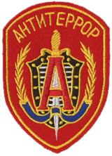

Kessikbayev grew up in a military family in Samarkand, Uzbekistan. After his family emigrated to Russia shortly before the collapse of the Soviet Union, Kessikbayev followed in his father’s footsteps and enrolled in the military, where his facility with technology earned him a spot in the coveted weapon testing brigade at Alabino firing range near Moscow.
Kessikbayev is an expert tinkerer and a master craftsman, more at ease with the workings of machines than those of people. His gruff demeanor and curt speech should not be mistaken for misanthropy. He possesses a strong moral conviction.
In 2004, Fuze had an altercation with SDU Operator Siu "Ying" Mei Lin, who considered him to be a "questionable asset" due to believing that he had a disregard for civilian lives. It was only after FBI SWAT Operator Eliza "Ash" Cohen stepped in to help resolve it. The events of this altercation were redacted.
